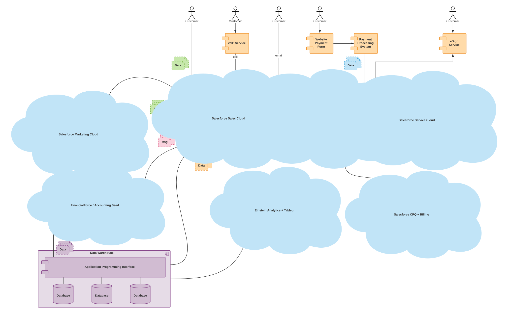

At Få Salesforce Til At Passe Ind I Det Eksisterende It-landskab
Serge Koczanowski
CTO hos Twistellar
Virksomhedsvækst og udvikling ledsages ofte af udfordringer i forbindelse med informationsstyring:
Mangel på komplet kundedata - data fordeles mellem separerede siloer (systemer), og det er virkelig udfordrende at danne et komplet overblik.
Dekoblede afdelinger - virksomhedsprocesser automatiseres ved brug af forskellige systemer, som ikke er synkroniserede, og kundeservice bliver derfor uregelmæssig.
Dekoblede afdelinger - virksomhedsprocesser automatiseres ved brug af forskellige systemer, som ikke er synkroniserede, og kundeservice bliver derfor uregelmæssig.
En rettidig løsning af disse udfordringer åbner for spændende vækstmuligheder samt en øget effektivitet. Denne udfordring kan løses ved at vælge en effektiv platform, som er i stand til at organisere de eksisterende systemer, erstatte deres forældede dele og give fuld kontrol over IT-landskabet.Salesforce, som er en førende i cloud-automatisering, er et glimrende valg.
Jeg har her listet de typiske faser i integrationsprojekter for Salesforce for at hjælpe dig med at træffe de rette beslutninger baseret på bedste praksis.
Analyse
Målet med dette stadie er at definere den aktuelle situation i organisationen. Her er de vigtigste spørgsmål:
listen over inkluderede enheder/applikationer i IT-økosystemet og deres egenskaber;
nuværende systemer og deres funktionelle formål.
Salg
Lad os prøve på at kombinere de mest almindelige komponenter, som vores IT-landskab ville kunne bestå af, så vi kan danne os et billede af et selvforsynende multilateralt system. Det skal kunne være i stand til at understøtte hele virksomhedens livscyklus. Hvad er det allerførste udgangspunkt for stort set alle virksomheder i verden? Det er en kunde - en person, som højst sandsynligt er interesseret i dine tjenester eller produkter. Og ja - det er tydeligt at en af de primære dele i et system bør implementere en fejlfri salgsproces og et tilsvarende niveau af kundeengagement. Sådan en antagelse vil give os mulighed for at definere den første del i systemet - CRM-komponent (på diagrammet), som er ansvarlig for interaktion med kunder og at indsamle den relevante kundedata til de forretningsprocesser, som er i brug på nuværende tidspunkt.
Markedsføring
Kommunikation med kunder er en ret kompleks opgave, som kræver grundige overvejelser i forbindelse med f de værktøjer, som i anvender til at bygge jeres interaktionsprocesser med kunderne. De fleste CRM-systemer har nogle grundlæggende marketingsfunktioner, og giver mulighed for at sende e-mails til kunderne eller giver dem mulighed for at udfylde og sende kontaktformularer, men der kan skabes et omfattende flow med professionelle eksterne moduler. Lad os definere dette som en separat marketing-komponent (på diagrammet)K
Fakturering og ressourcer
Når du møder udfordringer med finansielle processer og rapportering, indikerer det at det er tid til at fokusere på automatisering af regnskab. Hvis den nuværende CRM+Marketing sammensætning ikke er i stand til at skalere og at imødekomme det stigende niveau for processer med transaktion, tilbud og fakturering, tvinger situationen os til at kigge på et nyt modul, som er skabt til netop dette. Derfor er det en af de mest hyppige problemer og opgaver for IT-afdelinger, som skal undersøge integrationsfunktioner af moduler til ERP og regnskab (på diagrammet) for at inkludere dem i de nuværende processer og at kombinerer dem med CRM-kernen.
Business Intelligence
Automatiske beregnede KPI’er og performance indikatorer kan være ekstremt nyttige, når det kommer til beslutningstagning om virksomhedens videre udvikling. At producere både simple og mere omfattende rapporter, og at indikere svagheder indenfor salgsprocesser eller kundeinteraktion giver os mulighed for at nå frem til den korrekte konklusion og at planlægge aktiviteter til forbedring på tværs af forskellige ledelsesniveauer. Hvilken information kan være nyttig til det formål? Svaret er "enhver information" - lad blot din BI-komponent (på diagrammet) analysere de data, som du allerede har i systemet og brug resultaterne! nuværende processer og at kombinerer dem med CRM-kernen.
Datalagring
Når dit system er vokset, starter det med at udvikle sig: eksisterende og tilsluttede moduler justeres, og nye komponenter bliver introduceret og integreret. Hver ny del af systemet kan muligvis kræve forskellige sæt og niveauer af data fra forskellige moduler, og derfor bliver det nødvendigt at tilslutte en datalagring-komponent (på diagrammet) til at kunne lave backup og at dele både følsom og sekundær data fra forskellige dele af systemet.
Event Management & Datasynkronisering
Når der bygges et stort system, som er i stand til at understøtte de komplicerede funktioner, der er beskrevet ovenfor, er det essentielt at sikre integritet og relevans af information, samt en rettidig modtagelse i systemets forskellige lag. ESB (Enterprise Service Bus, på diagrammet) og ETL (Extract/Transform/Load, på diagrammet) er populære valg af tjenester, som er bygget til at understøtte live og planlagt envejs eller tovejs datasynkronisering.
Her er diagrammet over et mellemstort IT-landskab med alle de ovennævnte komponenter, som repræsenteres med deres forbindelser og afhængigheder:
Et basis landskab
Lokaliser & udskift
Fokus i dette stadie er på at definere de funktionelle komponenter, som er flaskehalse for virksomhedens skalering, eller som mangler integreringsfunktioner eller fleksibilitet til at opnå en ægte virksomhedsforbindelse hele vejen rundt. De vigtigste spørgsmål:
hvor er virksomheden nødt til at justere egne processer i forhold til begrænsninger i IT-systemerne?
har hastigheden på enkelte IT-komponenter blokeret den organisatoriske fremgang?
er der nogen problemer med skalering eller ydeevne, som allerede opleves, eller forventes i nær fremtid?
Sådanne komponenter erstattes med automatiseringer, som er konfigureret på eksisterende Salesforce-moduler, eller som bygges på Force.com-platformen.
CRM
Basale CRM-systemer er ikke specielt fleksible og de har ikke et lige så stort udvalg, som du kan finde på Salesforce-platformen. Administrering af kontaktformularer, håndtering af indgående/udgående e-mails via fleksible eller tilpasselige trigger-tjenester, integrerede og fleksible call centre og en bred vifte af fleksibel brugergrænseflader giver ikke alene Salesforce mulighed for at tilslutte sig til det eksisterende system, men det giver også mulighed for komplet at erstatte eksisterende moduler med en enkelt cloud. Følgende diagram viser et scenarie med Salesforce-migrering fra en multikomponent CRM til en solid og skalerbar blok. Slutkundens oplevelse bliver ikke påvirket, medarbejdere svarer bedre og hurtigere.
CRM-udskiftning
ERP
De fleste ERP-systemer fokuserer på at arbejde med finansielle data, forbundne dokumentstrømme, aktivstyring, kontraktstyring, udkast og underskrevne dokumenter. De processer er ofte temmelige komplekse og er forbundet med forældede instruktioner - det betyder at et skift til Salesforce kan tage tid, og at det igen skal testes hele vejen rundt og godkendes på alle ledelsesniveauer. I det tilfælde, lad os fokusere på ægte værdi, som kan tilføjes ved at integrere en Salesforce-instans til systemet: kundeinteraktion, website integration, og levering af problemfri salgsprocesser. Slutkundens oplevelse bliver ikke påvirket, processerne kombineres, fremskyndes og skaleres.
ERP-udskiftning
ESB/ETL
Det er ikke et tilfælde at vi har nævnt, at Salesforce er en platform - en ny SF-instans er ikke blot endnu et komponent, som integreres i en eksisterende infrastruktur, men en mulighed for at optimere databehandling samlet set og at gøre systemet mere konsistent. Det fungerer som en forbindelsesblok, og dette SF-modul kan tage ansvar for integrering af andre blokke, og byde på ESB/ETL-baseret komponentintegrationsdesign. I dette tilfælde skal valg af arkitekturtype være baseret på den estimerede mængde af data, og dette udgør grundlaget for systemets udvidelse samt dets skalerbarhed. Slutkundens oplevelse bliver ikke påvirket, processerne kombineres, og fremskyndes.
ESB/ETL-udskiftning
Tilslutning
Målet med dette stadie er at udnytte de effektive egenskaber til integrering af Salesforce og at forbinde de resterende systemer på et centraliseret sammensat IT-domæne. De vigtigste spørgsmål at løse:
definer sandheden omkring alle jeres virksomhedsdata;
dan et overblik over datastrøm på de driftsmæssige og ledelsesmæssige niveauer, byg de nødvendige parametre, rapporter og dashboards til virksomhedsledelsen.
connect the business processes to achieve seamless internal and customer cooperation flows.
Tilgange
Tilpasning af de præsenterede metoder, som er beskrevet ovenfor, transformerer det eksisterende system til et meget mindre fordelt og mere selvstændigt sæt af komponenter, som præsenteres i det følgende diagram. Som et resultat af at integrere Salesforce i det eksisterende IT-landskab, overskrider denne struktur ikke de primære/mellemliggende datastrømme og processer for kundeinteraktioner, men det simplificerer agenternes arbejde, tilgang til fordeling af data, og de generelle principper for tilslutning og udvidelse af komponentstrukturen.
Dog giver et fleksibelt system som Salesforce os mulighed for at gennemføre implementeringen på flere måder, det kan:
tilpasses til en eksisterende struktur som et integrerende kernesystem;
erstatte brugerdefinerede moduler, levere en definerbar grænseflade til interne og eksterne kundeorienterede layouts;
eller klare det hele!
Salesforce-landskab
Teknologier
De teknologiske aspekter ved Salesforce-integreringer mangeformet - det understøtter et antal principper for integrering og det kan tilpasses til stort set enhver form for arkitektur. Indlæsning af massedata, synkronisering af enkelte registreringer, brugerdefinerede grænseflader og offentliggørelse af events - alle disse operationer understøttes som standard og de justeres automatisk til at være kompatibel med den datastruktur, som allerede anvendes. De grænseflader, som dækker de fleste tilfælde af komponentintegrering og datasynkronisering er fremhævede med fed skrift.
Salesforce-integration muligheder
REST API
Skab, læs, opdater og slet registreringer, søg eller lav en forespørgsel på data, hent objekt metadata og opnå adgang til information om begrænsninger for organisationen. Fantastisk til apps på web og mobil.
SOAP API
Den samme funktionalitet som REST API, men den er baseret på en anden protokol og WSDL-beskrivelse. Glimrende til at skrive server-til-server-integrationer.
Bulk API
Dette er en asynkron RESTful API til forespørgsler og håndtering af store datamængder på én gang. Glimrende til at køre migrering af mange registreringer, som fx indledende dataoverførsel eller gennemførsel af sikkerhedskopiering af data.
Streaming API
Offentliggør-tilmeld design og transmission af dataændringer. Fremragende til at bygge apps med UI som er baseret på at indsamle hyppige datamodifikationer.
Begrænsninger
Ethvert cloud-system har sine egne begrænsninger for anvendelse, men det er også skalerbart - det er et vigtigt aspekt, som skal tages højde for, for ikke at betale for meget for ubrugte systemressourcer og at kunne konfigurere clouds styrke i et systems struktur. Jeg anbefaler at bruge den følgende ramme for at blive bekendt med de basale begrænsninger i Salesforce, når der designes en ny implementering eller når en eksisterende bliver udvidet.
Udforsk
Der er en række løsninger i Salesforce-domænet, som er blevet til en stærk trend i det moderne cloud-landskab. Ekstra udnyttelse af disse clouds bidrager til en forening og skalering af det organisatoriske IT-økosystem.
Marketing
Når vi udforske andre mulige forbedringer af systemet og Salesforce-clouds, kan det være at vi er opmærksomme på et Marketing Cloud værktøj, som kan levere en mere målrettet og omfattende oplevelse til dit kundeengagement. Det er en god valgmulighed at overveje, når man tænker på fremtiden for den markedsføringskomponent, der skal vælges til et system.
Et hurtigt overblik over markedsføringsmuligheder med SF:
Tilslut kendte og ukendte profiler for at opnå et forenet overblik over kunden.
Udnyt data og kunstig intelligens til at gøre alle interaktioner relevante.
Skab tovejs live engagering, når og hvor kunden ønsker det.
Evaluer, rapporter og optimer din markedsføring, effektivitet og kundeloyalitet.
Regnskabssystem
Løsninger til regnskab leveres af Salesforce-partnere som plug-ins, og de kan installeres direkte i cloud, så de bliver integreret problemfrit i SF-grænsefladen og tilknyttet til de specifikke SF-brugere. Der nævnes et par eksempler i diagrammet.
ERP-system
ERP kan bygges direkte i Salesforce ved hjælp af de levede værktøjer til tilpasning og udvikling, men der er også nogle plug-in valgmuligheder, som bør overvejes: Salesforce CPQ + Billing gør det muligt r at håndtere tilbud, kontrakter, aktiver og faktureringsrettigheder i Salesforce uden at du behøver at logge på et eksternt ERP-system, og holde begge systemer opdaterede.
Business Business Intelligence
Einstein Analytics + Tableau er et sæt af Salesforce-værktøjer, som giver brugerne mulighed for at forbinde forskellige datakilder til systemet, omdanne det til den samme format, køre AI-drevet analyse og præsentere resultaterne med praktiske dynamiske dashboards. Desuden bliver den samlede SF-baserede systemstruktur simplificeret med cloud.
Datalager
Salesforce er ikke designet som en løsning til datalagring, og derfor anbefales det at opbevare datapuljen i et separat miljø, hvis der eksisterer et behov for sådan en komponent.
Konklusion og anbefalinger

Salesforce-landskabet er i højteste niveau
Salesforce-platformens fleksibilitet og skalerbarhed giver mulighed for at benytteden i stort set ethvert eksisterende IT-landskab, i organisationer i forskellige størrelser, stadier i livscyklus og industrier;
Beslutninger om roadmap og prioriteter for Salesforce implementering bør træffes baseret på overvejelser om at reducere omkostninger og at opnå udviklingsmuligheder for din virksomhed.
det er alt for nemt at gøre en IT-infrastruktur kompliceret ved at bruge dekoblede systemer med en snæver specialisering, brug i stedet effektive og alsidige platforme, så enhver organisation har en strategisk vision om sit IT-økosystem.
Tjeklisten til optimering af IT-økosystem:
identificer alle dataenheder for jeres organisation og deres attributter;
lav en liste over de funktionelle komponenter i jeres IT-økosystem, og detaljer strømmene af dataprocesser og udvekslingen mellem dem;
afslør flaskehalse og manglende forbindelser i forretningsprocesser;
lokaliserer muligheder for automatisering af databehandling for at reducere omkostninger eller at øge salg;
fastsæt den strategiske vision for jeres virksomheds IT-landskab;
udregn de mulige afkast for de potentielle IT-investeringer, indikér roadmap;
fastlæg budgettet og start implementeringen;
anvendelse af en professionel Salesforce rådgivende virksomhed som Twistellar er ikke et krav, men det vil bestemt reducere risici og indirekte udgifter for implementering.
Lad os tale sammen, og gennemgå hvad Salesforce kan gøre for jer.
Vi hos Twistellar vil altid med glæde hjælpe og rådgivejeres beslutning om at vælge Salesforce eller ej. Vores højeste prioritet er at i er tilfredse med jeres valg (uanset om det er for eller imod Salesforce).
Our Best Articles
Category_1
Category_2
Save your money – a clever way to manage your sSlesforce Licenses
Har du lyst til at arbejde sammen med os her hos Twistellar? Vi er også spændte! Uanset om i ønsker at tilpasse jeres organisation, bygge en skræddersyet applikation, eller integrere et værktøj fra en tredjepart, står Twistellar klar til at hjælpe jer. Kontakt os, så vi kan gennemgå jeres Salesforce-ideer!